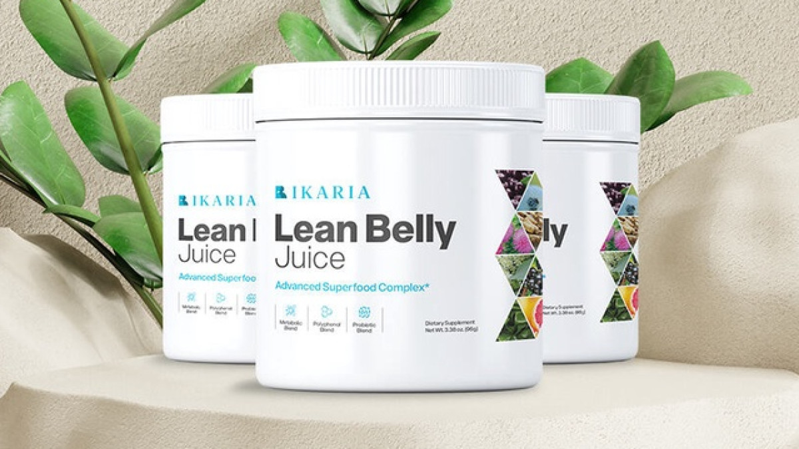

Flat Sale ONLY For Today - Special OfferSave Upto $300
+ Free Shipping + 60 Day Money Back Guarantee


Order TODAY And Save Up To
$1194! Save Over 85%!
Ikaria Lean Belly Juice™ Is The World’s First And Only 100% Safe And Natural Proprietary Formula.
Ikaria Lean Belly Juice is formulated to help people get in shape, especially those struggling with stubborn belly fat and excess weight gain
Unparalleled Fat Burning Results.
Regular Price: $179/per bottle
Only for: $69/per bottle
HURRY UP!